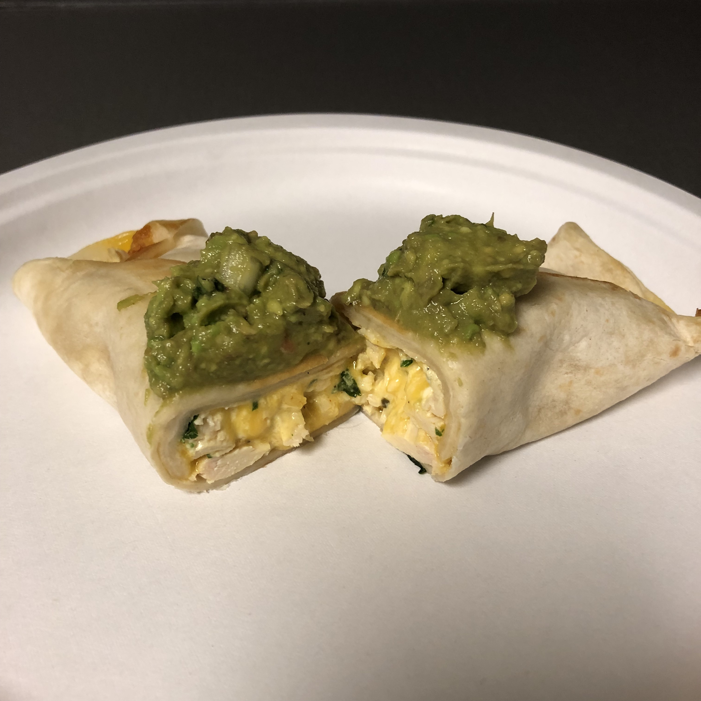

Chicken Avocodo Burritos

Ingredients
- 2 lbs chicken breasts
- 1 tablespoon paprika
- 1 teaspoon cumin
- 1 tablespoon oregano
- 1 teaspoon chili powder
- 1 teaspoon onion powder
- 1 teaspoon garlic powder
- salt and pepper, to taste
- 4 tablespoons chopped cilantro
- 8 tortillas
- 6 tablespoons sour cream
- 2 cups shredded cheddar or Mexican cheese
- 2 avocados
- olive oil
Instructions
- Preheat the oven to 450ºF.
- Stir paprika, cumin, oregano, chili powder, onion powder, garlic powder, salt and pepper together in a small bowl. (Quantities can vary - I don’t measure exactly.)
- Drizzle the chicken breasts with olive oil and then rub with mixed spices on both sides. Cook in oven for approximately 25 minutes or until chicken is cooked through.
- While chicken is cooking, chop cilantro and dice the avocados.
- When chicken is cooked, shred in a large mixing bowl. Once shredded, add cilantro, sour cream, avocados, and shredded cheese to the bowl and combine.
- Place 1-2 tablespoons of the mixture on a tortilla. Roll up tortilla and fold ends. Repeat with tortillas until the mixture is gone.
- Heat olive oil in a pan. Once warm, place 1-2 tortillas at a time in the pan to brown. It should be about 1-2 minutes per side. Make sure there is oil in the pan as to not burn the tortillas.
- Serve immediately! Top with salsa, sour cream or guacamole.
Original Source: Momdot